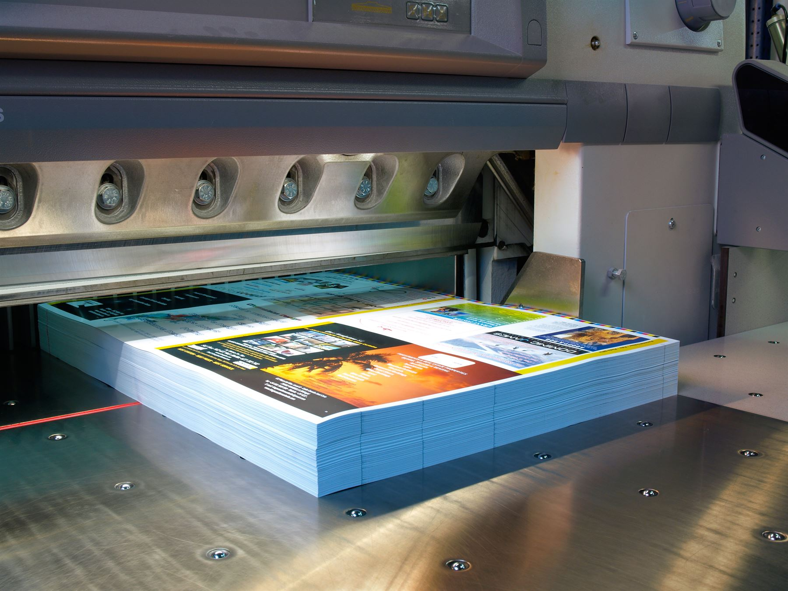
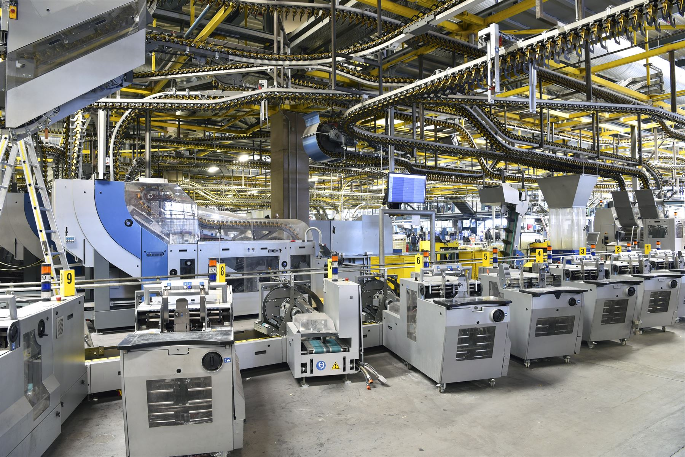
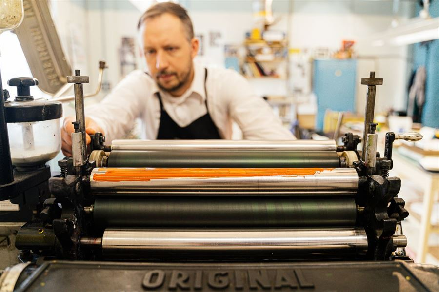
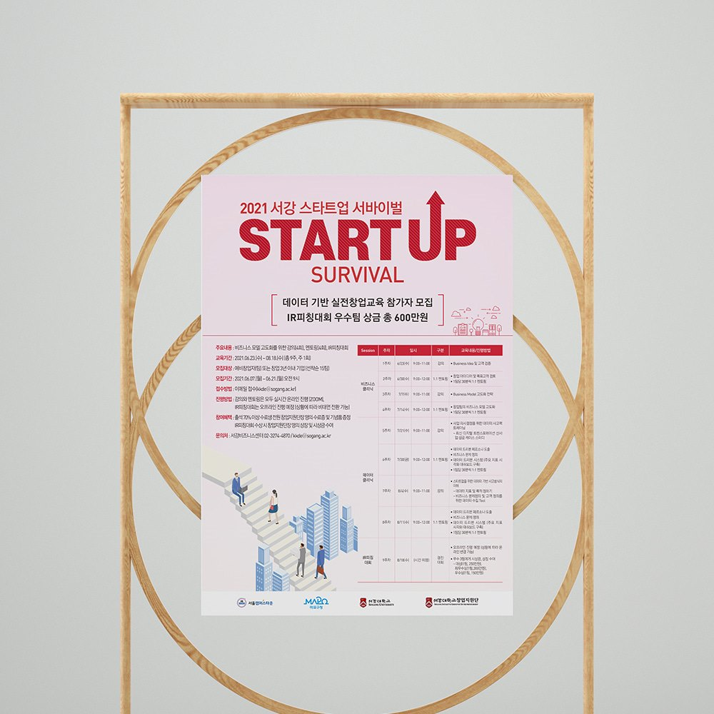
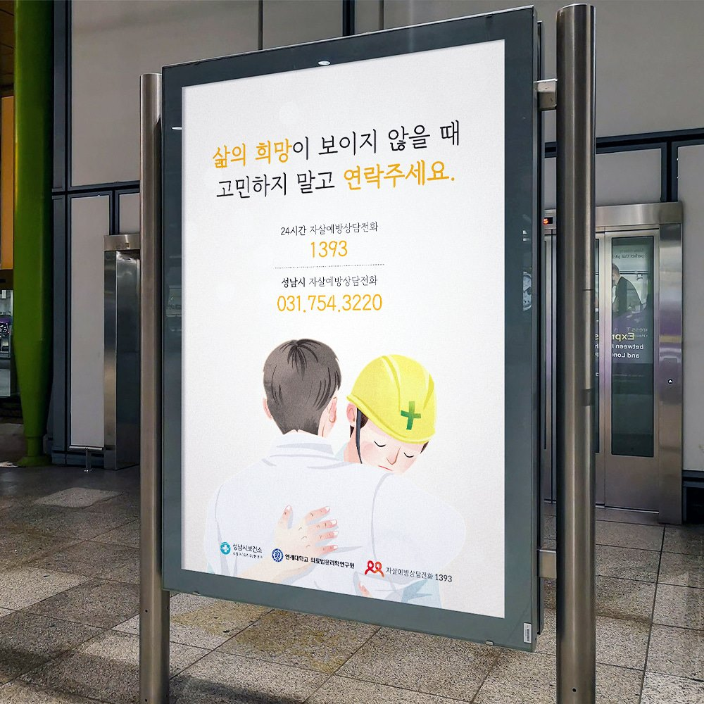
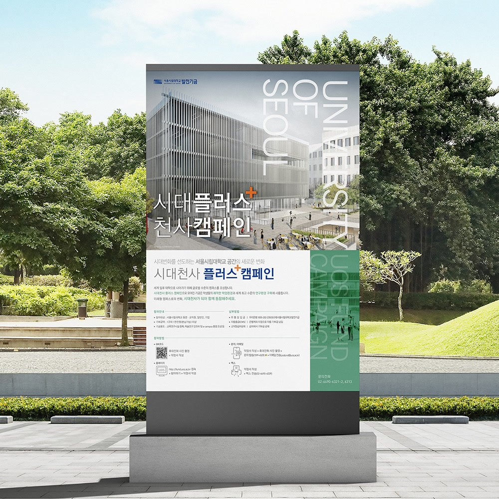
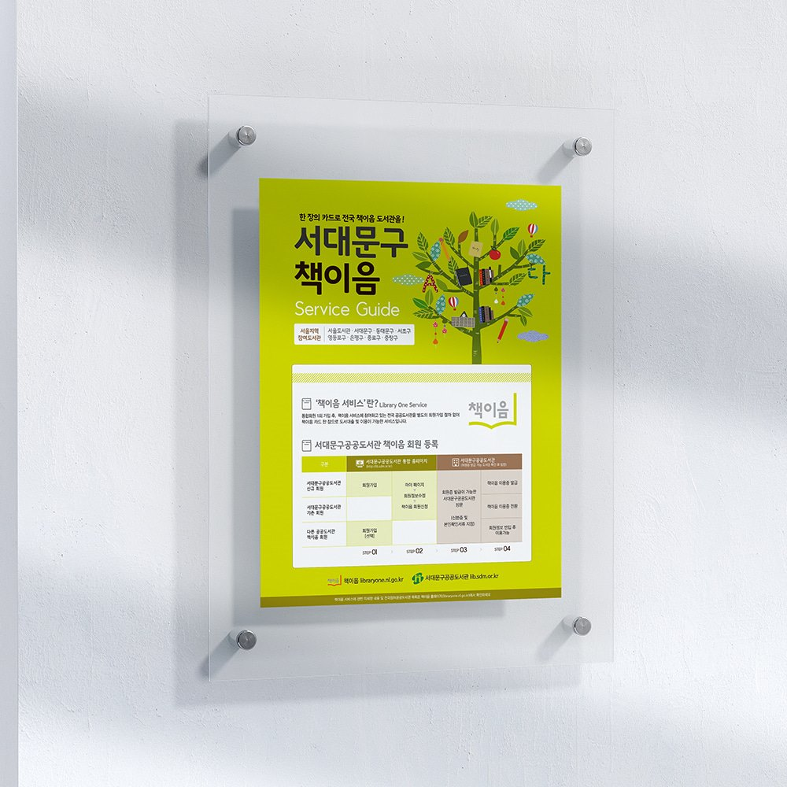
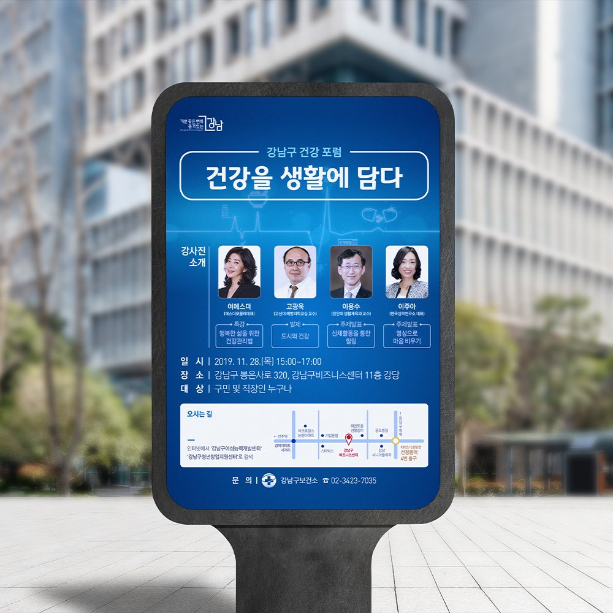
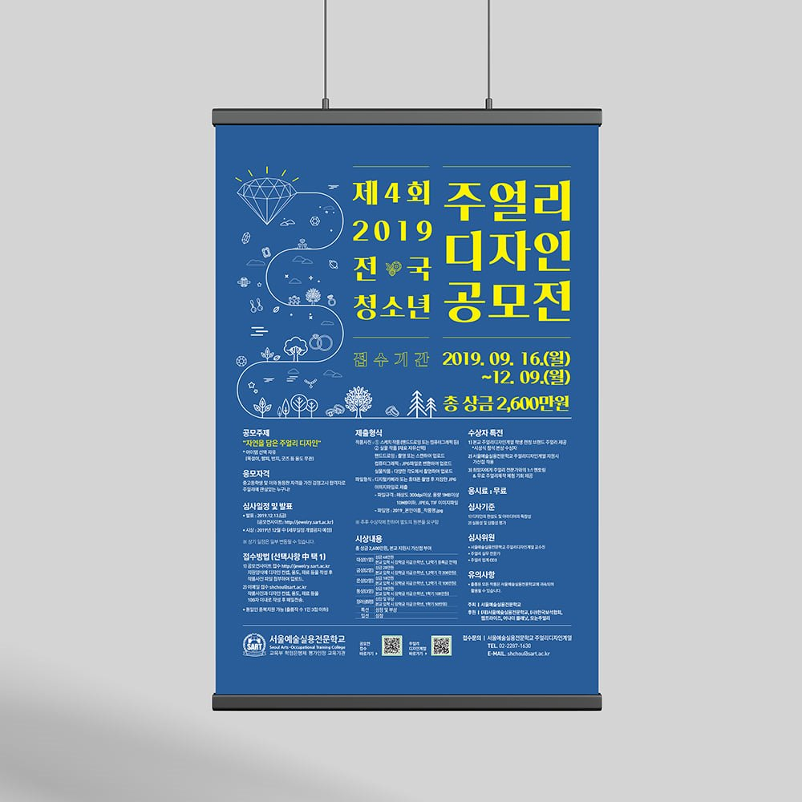
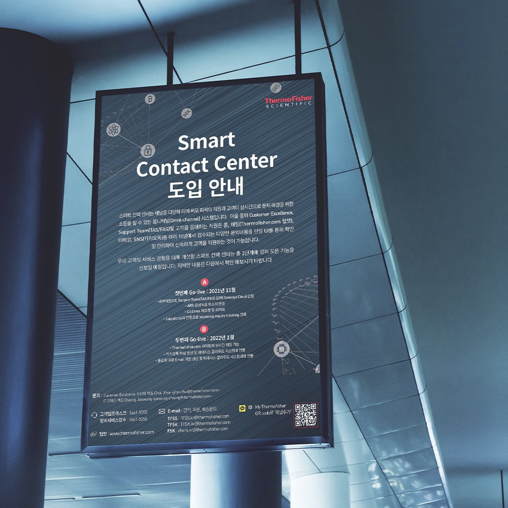

누가, 어디서
몇 초 동안 보는가
학회장에서 받는 리플렛과 연구소 로비에 놓인 성과집은 읽히는 방식이 다릅니다. 배포 장소와 독자부터 정합니다.
대전 · 세종 · 충청권 방문 미팅평일 09:00 ~ 18:00
POSTER
3초 안에 읽히지 않으면 포스터가 아닙니다.
학회·캠페인·행사 포스터를 한 장의 메시지로 정리해 대형 인쇄까지 마칩니다.

왜 그럴까요?
맡기기 전에 이 4가지를 꼭 확인하세요

그 이유는,
기획하는 곳, 디자인하는 곳, 인쇄하는 곳이 전부 다르기 때문입니다.
중간에서 말이 옮겨질 때마다 의도가 깎이고,
문제가 생기면 서로를 가리킵니다.
디자인했을 때와 인쇄했을 때의 결과가 너무 달라 당황하신 적 있으신가요?
기획팀 없이 인쇄만 하는 곳에 맡길 때 겪는 문제입니다.
이제, 기획과 디자인과 인쇄를 한 번에 맡겨기획 그대로의 퀄리티로 제작하세요.
 Design인쇄를 아는
Design인쇄를 아는
Print경력 15년 이상의 Marketing기획부터 참여하는
Marketing기획부터 참여하는인쇄를 이해하고 디자인하는 전문 인쇄 디자이너와 누구에게 어떻게 읽힐지 설계하는 전문 마케터가 함께 붙는 통합 운영 조직입니다.

대전지사의 방식
포스터는 걸리는 장소에 따라 읽는 거리가 다릅니다.
A0·A1 학회 포스터 한 장부터 A2·B2 캠페인 포스터 수천 장까지 인쇄 방식이 다릅니다.
Planning
예쁜 인쇄물과 읽히는 인쇄물은 다릅니다. 대전지사는 디자인 전에 누가 읽는지부터 정합니다.
학회장에서 받는 리플렛과 연구소 로비에 놓인 성과집은 읽히는 방식이 다릅니다. 배포 장소와 독자부터 정합니다.
주신 원고를 그대로 배치하지 않고 읽는 사람이 궁금해하는 순서로 재배열합니다. 표와 각주가 많을수록 효과가 큽니다.
전화 · QR · 문의 페이지로 다음 행동이 이어지는 동선을 심습니다. 읽고 끝나는 인쇄물을 만들지 않습니다.
이런 경우
학회 공지 규격으로 판형을 잡고 심사위원이 1m 앞에서 읽는 조건으로 본문 크기를 정합니다. 발표 전날 납품합니다.
게시 장소별 규격을 한 번에 만들고 기관 CI 규정을 반영해 옵셋으로 대량 인쇄합니다.
일정 · 장소 · 신청 방법과 QR코드를 눈에 띄게 배치하고 SNS용 이미지를 함께 만듭니다.
제작 항목
필요한 항목만 골라 의뢰하셔도 좋습니다.
POSTER
연구 결과와 발표 정보를 한 장에 정리하는 학회 포스터를 만듭니다.
A0·A1 규격으로 출력해 행사장으로 보내드립니다.

POSTER
정책 홍보, 안전 캠페인, 시민 참여 캠페인 포스터를 만듭니다.
게시 장소별 규격을 한 번에 제작합니다.

POSTER
설명회, 공모전, 채용 모집 포스터를 일정에 맞춰 제작합니다.
QR코드와 신청 방법을 눈에 띄게 배치합니다.
Use case
멀리서 3초 안에 읽혀야 하는 인쇄물입니다. 정보량보다 한 문장이 중요합니다.
학회 규격에 맞춰 1m 앞에서 읽히는 크기로 잡습니다.
일정과 장소를 한눈에 들어오게 배치합니다.
기관 게시판, 관공서 부착용 규격도 대응합니다.
대형 출력으로 부스 배경까지 제작합니다.
Print type
포스터는 접지 없는 낱장입니다. 수량과 사이즈로 방식이 갈립니다.
판을 떠서 찍는 방식입니다. 수량이 많을수록 장당 단가가 크게 떨어지고 색 재현이 가장 안정적입니다.
판 없이 바로 출력합니다. 1장부터 가능하고 제작이 빨라 학회 발표 전날이나 시안 확인용에 적합합니다.
A1보다 큰 사이즈, 현수막, 부스 배경에 사용합니다. 합성지 · 유포지에 출력해 찢어지지 않고 실외에서도 버팁니다.
Size
부착 장소와 읽는 거리로 사이즈를 정합니다.
| 판형 | 사이즈 | 주로 쓰는 곳 |
|---|---|---|
| A0 | 84.1 × 118.9cm | 학회 발표 포스터 (90×120cm 규격 대응) |
| A1 | 59.4 × 84.1cm | 학회 포스터, 극장 · 공연장, 대형 게시판 |
| B2 | 51.5 × 72.8cm | 지하철 · 버스정류장 게시대 |
| A2 | 42.0 × 59.4cm | 기관 벽면, 행사장 안내 |
| B3 | 36.4 × 51.5cm | 학교 · 기관 게시판 |
| A3 | 29.7 × 42.0cm | 창문, 엘리베이터 안내 |
Paper
실내용인지 실외용인지에 따라 지종이 달라집니다.
색이 진하게 나와
사진 포스터에 적합
빛 반사가 적어
글자가 잘 읽힘
물에 젖지 않고
잘 찢어지지 않음
질감이 살아 있어
전시 · 아트에 적합
포스터는 150g ~ 200g이 기본입니다. 얇으면 부착 시 우는 현상이 생깁니다.
벽면 부착
배포량 많을 때
가장 무난한
기본 두께
거치대 · 액자
세워 둘 때
POP · 매대
장기 사용
조명 반사가 적어
실내 게시에 적합
색이 진하고 선명
사진 포스터에 적합
비와 습기에 강해
실외 부착용
걸이용 구멍이나
모서리 둥근 마감
Comparison
| 일반 인쇄 업체 | 일반 디자인 업체 | 퍼스트디자인 대전지사 | |
|---|---|---|---|
| 마케팅 기획 | ✕해당 없음 | ✕디자인 범위만 | 전문 마케터가 구성 · 카피부터 참여 |
| 인쇄 전문 디자이너 | ✕외주 또는 진행 X | △인쇄 이해도 편차 | 접지 · 재단까지 계산해 조판 |
| 다국어 대응 | ✕해당 없음 | △번역본 외주 후 배치 | 번역 부서 직접 운영 번역 + 조판 동시 진행 |
| 인쇄 · 후가공 관리 | △자동 진행 · 감리 없음 | ✕외주 또는 진행 X | 용지 선정부터 재단까지 직접 관리 |
| 책임 소재 | ✕디자인 문제는 제외 | ✕인쇄 사고는 제외 | 한 팀이 끝까지 책임 |
진행 순서
게시 장소·규격·수량과
게시 일정을 확인합니다.
핵심 메시지와 규격을 정하고
견적과 일정을 안내합니다.
방향이 다른 시안 2안을 만들어
확인받습니다.
문구와 정보를 검수하고
수정을 반영합니다.
대형 출력 또는 옵셋 인쇄 후
행사장·기관으로 납품합니다.
제작 사례





About us
퍼스트디자인 전체 실적 기준입니다. 대전지사는 같은 기획 · 인쇄 기준으로 충청권 기관과 기업을 맡습니다.
오랜 시간 쌓아온
현장 실무 경험
수많은 기업 · 기관이
퍼스트와 함께합니다
다양한 실무 경험으로
믿고 맡기십시오
“내 일처럼” — 그게 우리가 일하는 방식입니다.
정부 지원사업 안내물, 정부대전청사 · 세종 공공기관 홍보물, 지자체 캠페인까지 제출 규격과 검수 절차를 아는 상태로 진행합니다.
대덕연구단지 정부출연연구기관과 대학 연구센터의 연구성과집 · 학회 자료는 발간 규정과 표기 원칙을 정리한 뒤 시작합니다.
대기업 계열사와 공기업, 대덕테크노밸리의 바이오 · 기술기업 인쇄물을 다수 제작했습니다. 브랜드 가이드라인을 지키면서 결과물을 만듭니다.
번역 부서를 직접 운영해 영문 · 중문 · 베트남어 인쇄물을 번역부터 조판까지 한 번에 처리합니다.
자주 묻는 질문
대전에서 포스터를 의뢰하실 때 가장 많이 받는 질문입니다.
디자인 3~5영업일, 인쇄 1~3영업일로 약 1~2주 안에 받아볼 수 있습니다. 학회 포스터처럼 한두 장만 필요한 경우는 시안 확정 당일 출력도 가능합니다.
학회에서 공지한 규격(A0 세로, 90×120cm 등)을 알려주시면 그 규격으로 판형을 잡습니다. 규격이 없으면 A0 세로를 기본으로 제작합니다.
네. 인쇄용 포스터와 함께 인스타그램·홈페이지 게시용 이미지를 규격별로 정리해 드립니다.
500장 이상은 옵셋 인쇄로 전환해 장당 단가가 크게 내려갑니다. 수량별 견적을 비교해 안내드립니다.
네. 포스터 디자인을 기준으로 현수막, X배너, 롤배너 규격을 함께 만들어 행사 전체의 통일감을 맞춥니다.
네. 대학·연구기관이 모인 유성구를 비롯해 대전 전 지역과 세종·청주는 필요한 날 방문해 상담드립니다. 전화 1600-9487로 요청해 주세요.
FIRST DESIGN DAEJEON
기획 · 디자인 · 번역 · 촬영 · 인쇄를 한 팀이 진행합니다.
원고가 정리되기 전이라도 목차와 일정부터 함께 잡아 드립니다.